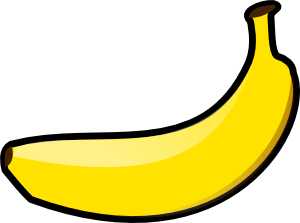

人生在世，总有不尽人意，所以偶尔有些波澜也在所难免，偶尔有些坎坷也别太在意。可很多时候，我们的烦恼，却是源自于对得与失的计较，对爱与恨的抉择，对进或退的纠结。久而久之，这样的烦恼却成为了我们生活中，最残酷的现实，和最大的阻碍。倘若我们能够学会放下，学会看开，便不会有如此之多的烦恼。只有坦然，才能让人变的从容，才能把心推向阳光，才能让心微笑向暖。
也许心再阳光，也难免忧伤，路再宽广，也难免彷徨。但那又怎样！人生除了悲伤，便是快乐，前路除了平坦，便是坎坷。人生一世，一半欢喜，一半忧伤，无论你是喜还是忧，时间都是一分一秒的走，它不会因为你的难过而快走一分，也不会因为你的快乐而慢走一秒。
其实人生的困难，是遇到的困难时，我们学会去面对和解决它的过程，而不是困难的本身。正如你丢了一大笔钱，而你失去这笔钱，你未来的日子会很困难，可现在对于你来说，最大的困难，却不是你丢了钱后会怎样，而是你根本难以面对和接受你已经丢钱的事实。
其实人生的困难，是遇到的困难时，我们学会去面对和解决它的过程，而不是困难的本身。正如你丢了一大笔钱，而你失去这笔钱，你未来的日子会很困难，可现在对于你来说，最大的困难，却不是你丢了钱后会怎样，而是你根本难以面对和接受你已经丢钱的事实。
| 1 | 1 | 1 | 1 |
|---|---|---|---|
| 1 | 1 | 1 | 1 |
| 1 | 1 | 1 | 1 |
可是许多事情，只有经历过的人，才能云淡风轻，因为经历多了，自然就麻木了，释怀了。很多时候，我们难过的，无非就是不舍，而我们惧怕的，也无非是从未经历过。但是，今天你所难过的，所惧怕的，总有一天，你都会坦然自若的说一句：不过如此。而你也终将明白，那些正在经历的困难，叫做迷茫，而那些历过的困难，叫做成长。
也许心再阳光，也难免忧伤，路再宽广，也难免彷徨。但那又怎样！人生除了悲伤，便是快乐，前路除了平坦，便是坎坷。
人生一世，一半欢喜，一半忧伤，无论你是喜还是忧，时间都是一分一秒的走，它不会因为你的难过而快走一分，也不会因为你的快乐而慢走一秒。
人生一世，一半欢喜，一半忧伤，无论你是喜还是忧，时间都是一分一秒的走，它不会因为你的难过而快走一分，也不会因为你的快乐而慢走一秒。
人生于世，倘若能够拥有一付达观的心境，便能超然脱俗不为世事所累，面对一切，可以引吭高歌，可以长歌当哭，可以豪饮一醉，也可以平静如水。可奈何我仅是个凡人，终究难以拥有那样豁达和潇洒。也许一个人的一生，不在于成败，而是在于风雨中的那份坚强和执著，不管结局如何，最起码我明白自己需要什么。
最残酷的现实，和最大的阻碍。倘若我们能够学会放下，学会看开，便不会有如此之多的烦恼。只有坦然，才能让人变的从容，才能把心推向阳光，才能让心微笑向暖。
喜欢你，已经很久很久了，久到春秋变幻，山河失色，我还是一如既往的将你放在心口，让这份爱，感受到心的悸动和火热。
一份沉默的爱，既是一种无言的沧桑，也是一种守望的惆怅。圆月来不及新瘦，溪流来不及冰封，我却已将你放在心头，百转千回了无数个春暖花开。
爱情，是美好的，也是忧伤的，它是这个世上最折磨人的东西。走过了许多路，见过了许多人，我却在某一时刻独独遇见了你，然后用尽生平的力气爱上了你。许久许久以后，你成为了我心灵上的一枚朱砂，自此，紫陌垂杨，情深意长。
我总是在想，那些相信时间可以疗伤的人，终究还是爱的不够吧？“绿萝拂过衣襟，青云打湿诺言”，一卷荷风，几场梅雨，便独独消瘦了爱情，只留下一个人的细水长流，这总归还是爱的不够深吧？